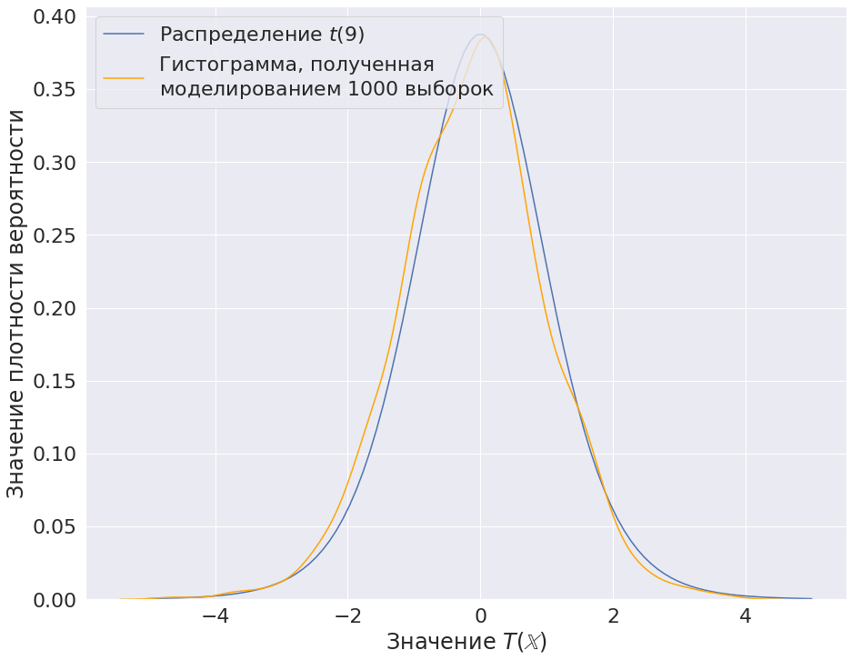

Немного про проверку гипотез
Введение
Любые статистические испытания зиждятся на проверке гипотез, например:
- Проверка действия лекарств.
- Установление зависимости между явлениями.
- A/B тестирование и пр.
В зависимости от вида данных, целей исследования и других факторов можно по-разному формулировать гипотезы и по-разному их проверять.
Многое зависит от не только знаний и опыта исследователя, но и в целом от его подхода. В процессе работы можно все меньше уделять внимание математической составляющей и все больше полагаться на компьютер и его вычислительные мощности.
Здесь я хочу рассказать о стадиях, через которые проходит исследователь, в попытках упростить себе жизнь и ускорить процесс проверки гипотез.
Небольшой ликбез
В статистике, если упростить, проверку гипотезы можно описать так:
- По данной выборке считается статистика (т.е. функция от выборки).
- Из распределения статистики находятся две области, где гипотеза отвергается и где нет. Исходя из этого, принимается решение.
N.B. Проверяется гипотеза, модель постулируется.
Стадия 1. Строгие доказательства
На данной стадии ученый строго выводит распределения статистик, чтобы построить как можно более хорошие критерии.
Получим:
Таким образом, по определению:
Небольшой пример (критерий Стьюдента)
Дано: выборка Х объема 10
Модель: \(N(\mu, \theta_2)\)
Нулевая гипотеза: \(\mu = 3\)
Решение:
Статистика критерия:
Статистика равна:
Пусть уровень значимости \(\alpha = 0.05\).
Область, где не отвергается нулевая гипотеза: \((g_1, g_2) = (-2.262, 2.262)\), т.е. это область, которую принимает значение статистики при условии верности нулевой гипотезы с вероятностью \(1 - \alpha = 0.95\). \(g_1\) в данном случае это \(0.025\)-квантиль, а \(g_2\), соотвественно, 0.975-квантиль.
Красным обозначен интервал \((g_1, g_2)\)
Таким образом, нулевая гипотеза не отвергается, так как значение статистики лежит в данном интервале.
Примечание: можно было выбрать доверительный интервал иначе, но его стараются выбрать так, чтобы минимизировать его длину.
Стадия 2. Открытие моделирования
Иногда (вернее, даже как правило) распределение статистики вывести невозможно. В таком случае пользуются моделированием. Идея в том, что нам известно распределение выборки в случае нулевой гипотезы. Таким образом, можно многократно генерировать выборки и считать статистику, таким образом получив ее распределение.

В данном случае, моделирование выборки проводилось в условиях \(X \sim N(\mu, S^2)\).
Можно увидеть некоторое расхождение. В этом, кстати, заключается интересный момент. Часто критикуются исследования построенные на моделировании, так как есть ненулевая (хоть и очень маленькая) вероятность, что выборки сгенерировались так, что полученное распределение статистики плохо отражает реальность.
Стадия 3. Бутстрэп
Бывают случаи, когда распределение выборки неизвестно совсем (или его сложно/нельзя в обычном смысле генерировать, пример). В таком случае постулируют, что данная выборка хорошо отражает генеральную совокупность и в качестве функции распределения берут эмпирическую функцию распределения.
где:
В итоге, получается, что для проверки гипотез не нужно ничего кроме выборки и выдуманной статистики (которая, вообще, может быть любой, от нее зависит только качество получаемого критерия).
Основная идея заключается в том, чтобы генерировать выборки объемом как и данная выборка из следующего распределения:
Таким образом, из расхождения графиков можно сделать следующие выводы:
- применение бутстрэпа требует большой объема первоначальной выборки,
- наблюдения в выборке должны быть независимыми.
Несмотря на это, он часто применяется невпопад, так как не требует особых затрат на реализацию.